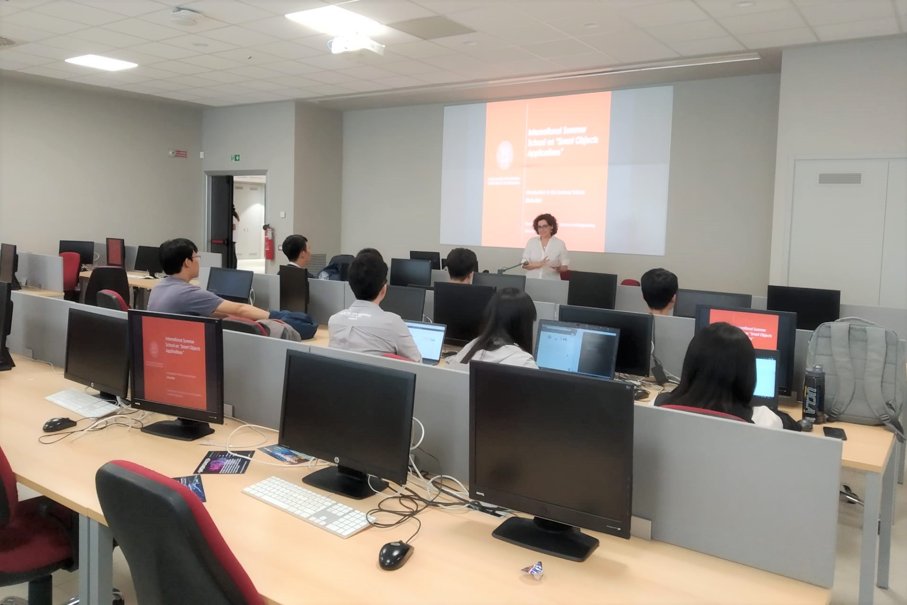
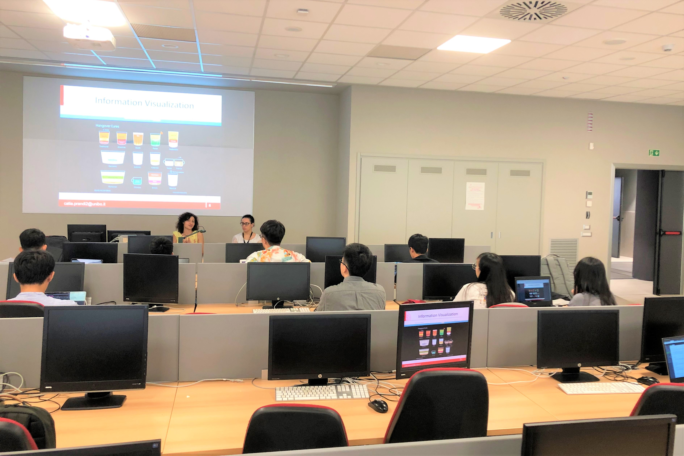
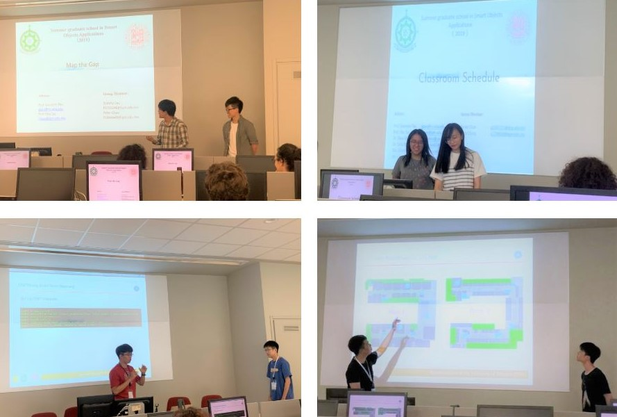
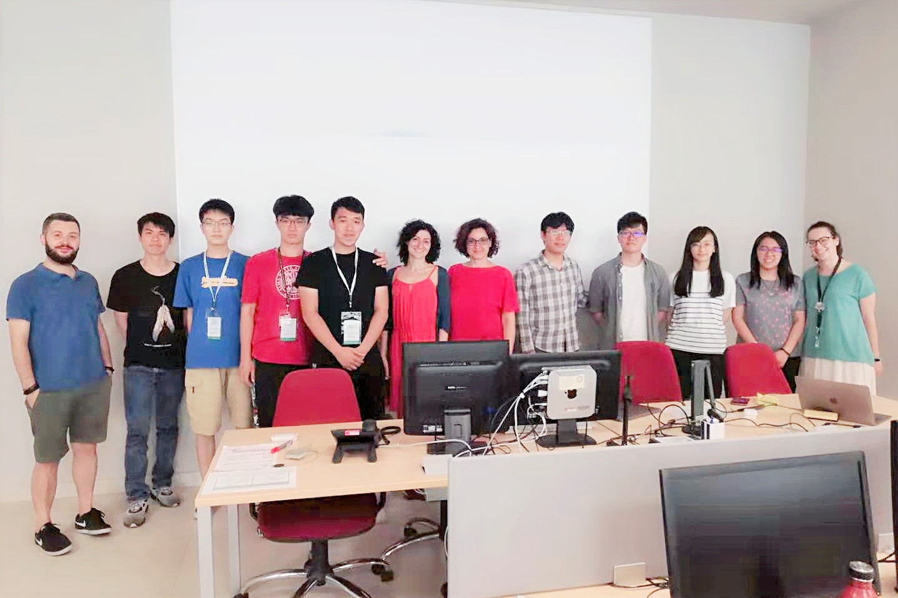
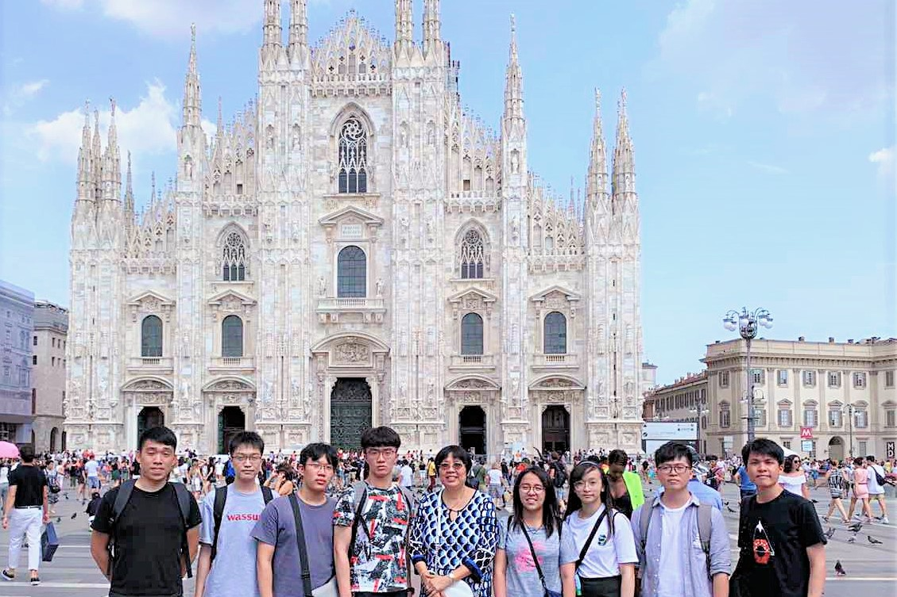
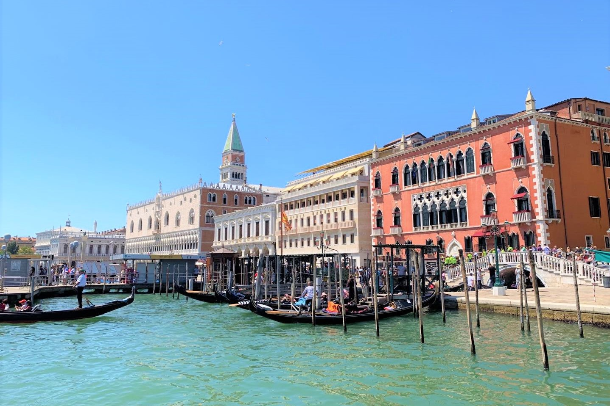
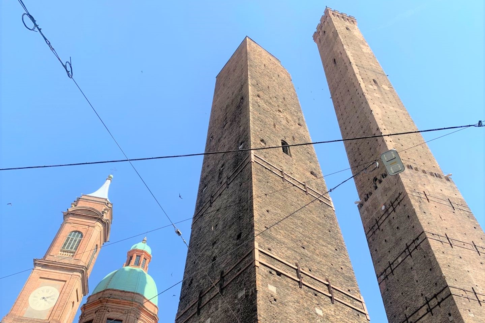
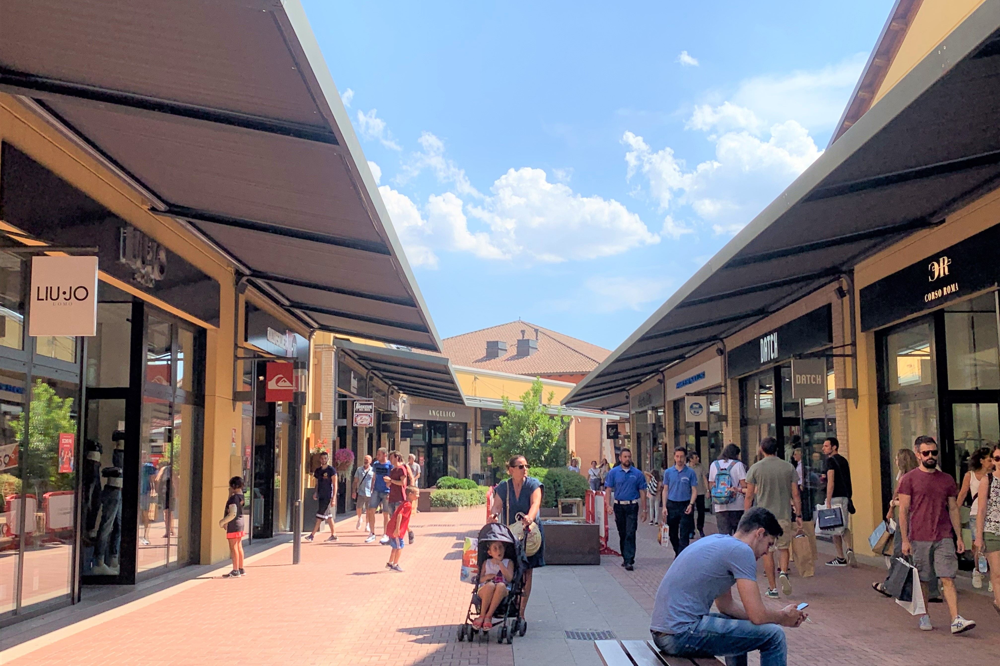

9-21 July, 2019
In this summer, we went to University of Bologna (Cesena) to participate the International Summer School. This is the first time our Computing Programme held this exchange. During this period, we had lectures and lab activities in the campus and these experiences can improve our research abilities.
>>> Bachelor of Science in Computing
Lectures
We have lectures on 4 different topics on Smart Objects Applications.
- HCI and Interaction with Smart Objects
- Data Visualization and Gamification
- Smart Objects Security
- Data Predection


Projects and Presentations
There are 8 students got this opportunity to take part in this summer school programme this year. We were divided into 4 groups to complete our projects.
After we completed the projects, we had a presentation to show our achievements. Each group can discuss with the projects and possible further work with professors and tutors after the presentation.

Here is the group photo we were taken with professors and tutors.

Trips
We went some famous cities during the summer school period, including Milan, Venice, Bologna and Modena. We went sightseeing and visited museums.
Milan

Venice

Bologna

Modena
